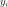
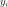
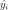
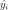

MetaModelResult¶
- class MetaModelResult(*args)¶
Data structure containing a metamodel.
- Available constructor:
MetaModelResult(model, metaModel, residuals, relativeErrors)
- Parameters
- model
Function Physical model approximated by a metamodel.
- metaModel
Function Definition of the response surface(s) of the model’s output(s).
- residualssequence of float
The residual values defined as follows for each output of the model:
 with  the
with  the  model’s values and  the
metamodel’s values.
model’s values and  the
metamodel’s values.- relativeErrorssequence of float
The relative errors defined as follows for each output of the model:
 with
with  the vector of the model’s values
and the metamodel’s values.
the vector of the model’s values
and the metamodel’s values.
- model
See also
Notes
Structure created by the method run() of
KrigingAlgorithmorFunctionalChaosAlgorithmand obtained thanks to the method getResult() of these classes.Methods
Accessor to the object's name.
getId()Accessor to the object's id.
Accessor to the metamodel.
getModel()Accessor to the model.
getName()Accessor to the object's name.
Accessor to the relative errors.
Accessor to the residuals.
Accessor to the object's shadowed id.
Accessor to the object's visibility state.
hasName()Test if the object is named.
Test if the object has a distinguishable name.
setMetaModel(metaModel)Accessor to the metamodel.
setModel(model)Accessor to the model.
setName(name)Accessor to the object's name.
setRelativeErrors(relativeErrors)Accessor to the relative errors.
setResiduals(residuals)Accessor to the residuals.
setShadowedId(id)Accessor to the object's shadowed id.
setVisibility(visible)Accessor to the object's visibility state.
- __init__(*args)¶
- getClassName()¶
Accessor to the object’s name.
- Returns
- class_namestr
The object class name (object.__class__.__name__).
- getId()¶
Accessor to the object’s id.
- Returns
- idint
Internal unique identifier.
- getName()¶
Accessor to the object’s name.
- Returns
- namestr
The name of the object.
- getRelativeErrors()¶
Accessor to the relative errors.
- Returns
- relativeErrors
Point The relative errors defined as follows for each output of the model:
with the vector of the model’s values
and the metamodel’s values.
- relativeErrors
- getResiduals()¶
Accessor to the residuals.
- Returns
- residuals
Point The residual values defined as follows for each output of the model:
with the model’s values and the
metamodel’s values.
- residuals
- getShadowedId()¶
Accessor to the object’s shadowed id.
- Returns
- idint
Internal unique identifier.
- getVisibility()¶
Accessor to the object’s visibility state.
- Returns
- visiblebool
Visibility flag.
- hasName()¶
Test if the object is named.
- Returns
- hasNamebool
True if the name is not empty.
- hasVisibleName()¶
Test if the object has a distinguishable name.
- Returns
- hasVisibleNamebool
True if the name is not empty and not the default one.
- setModel(model)¶
Accessor to the model.
- Parameters
- model
Function Physical model approximated by a metamodel.
- model
- setName(name)¶
Accessor to the object’s name.
- Parameters
- namestr
The name of the object.
- setRelativeErrors(relativeErrors)¶
Accessor to the relative errors.
- Parameters
- relativeErrorssequence of float
The relative errors defined as follows for each output of the model:
with the vector of the model’s values
and the metamodel’s values.
- setResiduals(residuals)¶
Accessor to the residuals.
- Parameters
- residualssequence of float
The residual values defined as follows for each output of the model:
with the model’s values and the
metamodel’s values.
- setShadowedId(id)¶
Accessor to the object’s shadowed id.
- Parameters
- idint
Internal unique identifier.
- setVisibility(visible)¶
Accessor to the object’s visibility state.
- Parameters
- visiblebool
Visibility flag.